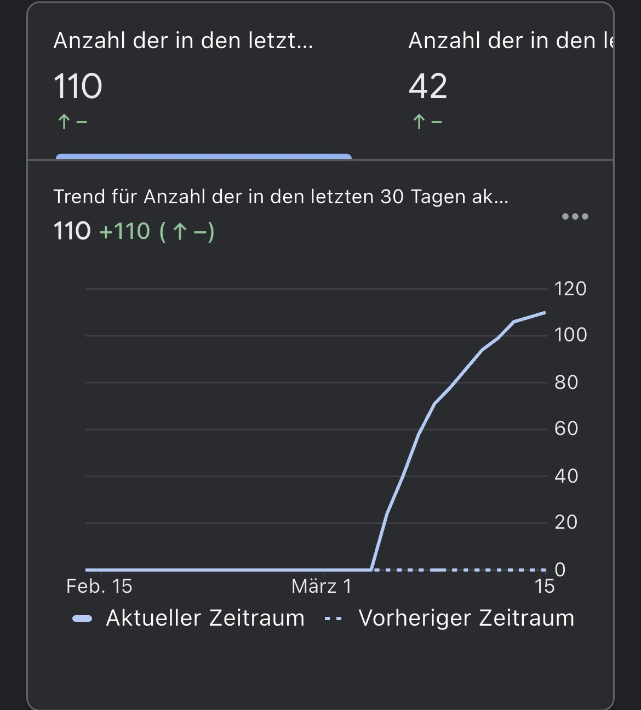
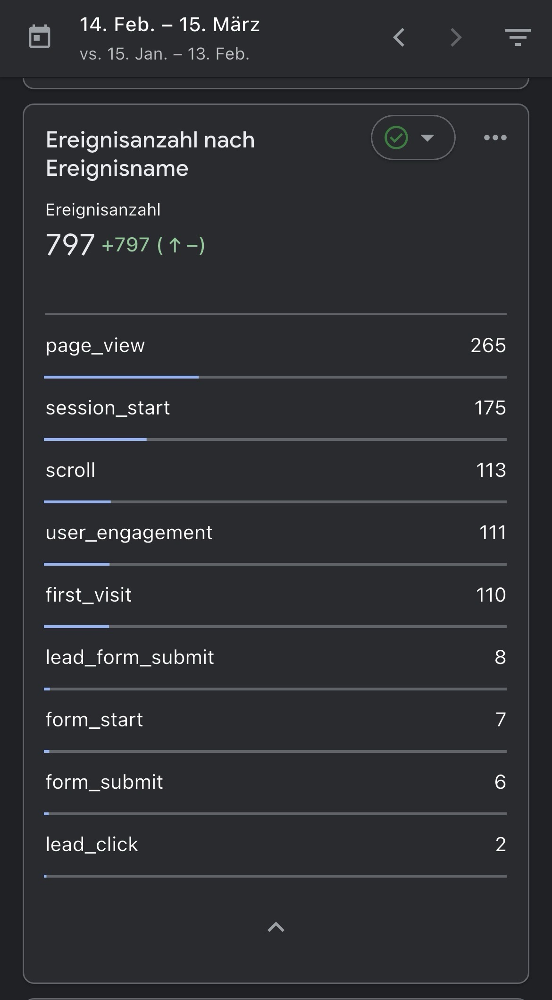

1. Strukturierter Aufbau
- klare Hero Section mit Nutzenversprechen
- saubere Sections statt Textwüste
- klare Kontaktwege und CTAs
Diese Case Study zeigt, wie aus einer neuen Website Schritt für Schritt eine sichtbare Online-Präsenz werden kann. Nicht durch Zufall, sondern durch Struktur, Geo-Optimierung, SEO, klare Nutzerführung und konsequente Umsetzung.
Viele Unternehmen sehen nur die fertige Website. Entscheidend ist aber, was danach passiert: Wird sie gefunden? Bleiben Besucher auf der Seite? Werden daraus echte Kontaktanfragen?
Diese Seite ist keine leere Behauptung, sondern zeigt den typischen Weg, wie Websites nach dem Launch langsam in Googles System aufgenommen werden.
Erste Impressionen, steigende Klicks, mehr Interaktion und schließlich erste Leads sind keine Zufälle, sondern das Resultat der richtigen Struktur.
Viele lokale Unternehmen starten online praktisch bei null. Genau dort beginnt auch der wichtigste Teil einer Case Study: der ehrliche Startpunkt.
Vor dem Launch gibt es keine relevanten Rankings, keine Impressionen und keine klare Struktur, die Google verstehen kann.
Ohne CTA, ohne sauberen Seitenaufbau und ohne Conversion-Logik bleibt eine Website oft nur eine digitale Visitenkarte.
Besucher entscheiden in Sekunden, ob eine Website professionell wirkt. Fehlt Vertrauen, wird nicht angefragt.
Ohne passende Landingpages, interne Verlinkung, Geo-Bezug und klare Inhalte ist Wachstum kaum möglich.
Der Unterschied entsteht nicht durch ein hübsches Layout allein, sondern durch das Zusammenspiel mehrerer Faktoren.
Websites wachsen selten sofort explosionsartig. Der bessere Weg ist nachhaltiger: erst Indexierung, dann Sichtbarkeit, dann Klicks, dann Anfragen.
Kurz nach dem Launch beginnt Google neue Seiten zu crawlen. Das ist der Moment, in dem erste Impressionen überhaupt möglich werden.
Über Longtail-Keywords und lokale Seiten entstehen erste Positionen, auch wenn diese am Anfang noch weit hinten liegen.
Sobald erste Suchbegriffe besser ranken, steigen die Besuche. Das ist der Punkt, an dem aus einer „toten“ Website langsam ein Kanal wird.
Mit klaren CTAs, Vertrauen und einer professionellen Nutzerführung können aus Besuchern erste echte Kontaktanfragen entstehen.
Die folgenden Beispiele zeigen, wie sich Sichtbarkeit, Traffic und Interaktionen nach dem Launch entwickeln können.




Es geht nicht nur darum, dass Besucher auf eine Website kommen. Entscheidend ist, dass daraus Vertrauen und Handlungen entstehen.
Eine hochwertige Website erhöht die Chance, dass Besucher bleiben, lesen und den Anbieter ernst nehmen.
Durch klare Inhalte, Landingpages und interne Verlinkung erkennt Google, welche Themen relevant sind.
Eine starke Online-Präsenz macht aus einem lokalen Anbieter eine Marke, der man eher zutraut, professionell zu liefern.
Das Ziel ist nicht ein kurzer Peak, sondern ein System, das Woche für Woche stärker wird.
Viele Unternehmen investieren in eine Website und wundern sich danach, warum nichts passiert. Der Unterschied liegt fast nie nur im Design, sondern in Struktur, SEO, Vertrauen und klarer Conversion.
Wenn du ebenfalls eine Website willst, die sichtbar wird und echte Anfragen generiert, dann ist genau jetzt der richtige Zeitpunkt.